GreenChop đã nghiên cứu tâm lý ăn uống của người Việt để cho ra được sản phẩm với cấu trúc thông minh và thiết kế tinh tế. Đũa xanh GreenChop cho phép người dùng dễ dàng tháo lắp đầu và thân đũa. Việc thay thế đầu đũa mới trong mỗi bữa ăn giúp đảm bảo tính riêng tư và tối thiểu khả năng bị lây virus Covid cũng như các vi khuẩn gây bệnh khác. Sản phẩm đảm bảo thân thiện với môi trường và bảo vệ sức khỏe của người dùng với đầu đũa bằng gỗ tre được khử khuẩn 100%.
